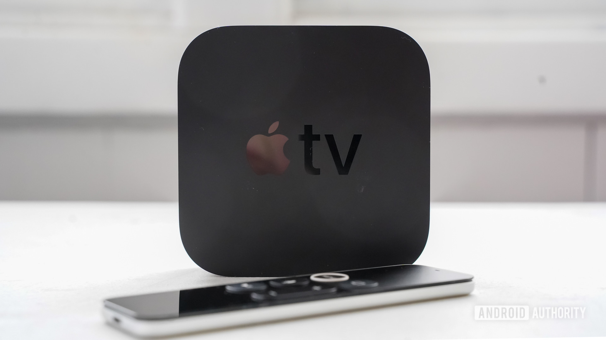

Shop now at the Apple Store online with many great ways to buy. Get free, no-contact delivery, Specialist help and more
Apple TV+
A higher definition of TV.
The new Apple TV 4K brings the best of TV together with your favourite Apple devices and services — in a powerful experience that will transform your living room.Balance colour with a perfectly calibrated combo.
Adjusting your television settings to get the best picture quality can be frustrating. Not anymore. Apple TV 4K now works with your iPhone to automatically calibrate what you watch. Just point your iPhone at your TV screen once, then sit back and see how amazing your shows and movies are supposed to look.
Apple TV Plus is Apple's premium subscription streaming service that attempts to take on Netflix, Hulu, Amazon Prime Video, and others. It's completely ad-free and features a host of original shows and movies made under the Apple Originals program, as well as a small library of licensed content.
Apple offers its own TV and movie streaming service called Apple TV+ (or Apple TV Plus).
The service is pitched as Apple's direct rival to the likes of Netflix, Amazon Prime Video, and Disney+, and presents original programming only - all through the existing Apple TV app that is available on multiple devices.
Here is everything you need to know about Apple TV+, including how much it costs, how it works and what shows it features.
How to use the Apple TV app on iPhone and iPad
APPLE
What is Apple TV+?
Apple TV+ is Apple's home for original films and series.
It is available on a monthly subscription and available across several platforms through the latest version of the Apple TV app. Apple TV+ offers ad-free, exclusive content that's been either green-lit or produced in-house by Apple itself.
To help ensure the success of its first foray into original content, Apple partnered with some of the biggest names in Hollywood, such as Steven Spielberg, Oprah Winfrey, JJ Abrams, and even Big Bird.
Where is Apple TV+ available?
Apple TV+ is available in over 100 countries, including the US and UK.
How much does Apple TV+ cost?
You can subscribe to and watch Apple TV+ through the Apple TV app available across multiple devices.
Standalone
Apple TV+ costs £4.99 / $4.99 per month for a family subscription. However, you can save a bit if you subscribe to Apple One, which bundles other Apple streaming services together at a discount. Interested users can further get a seven-day trial period to Apple TV+ to watch content for free.
Finally, Apple gives anyone who buys a new iPhone, iPad, iPod touch, Mac, or Apple TV one year of Apple TV+ for free.
Apple One bundle
Apple's services bundle for Apple Music, Apple TV+, Apple Arcade, Apple News+, and Fitness+ launched in October 2020. That means you can now subscribe to Apple TV+ through one of three different Apple One bundle tiers: Individual, Family, and Premier.
Apple One's Individual and Family plans are available in over 100 countries and regions, including in the US and UK. The Premier plan also launched, but only in the US, UK, Canada, and Australia.